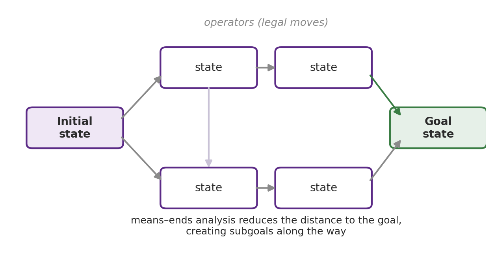
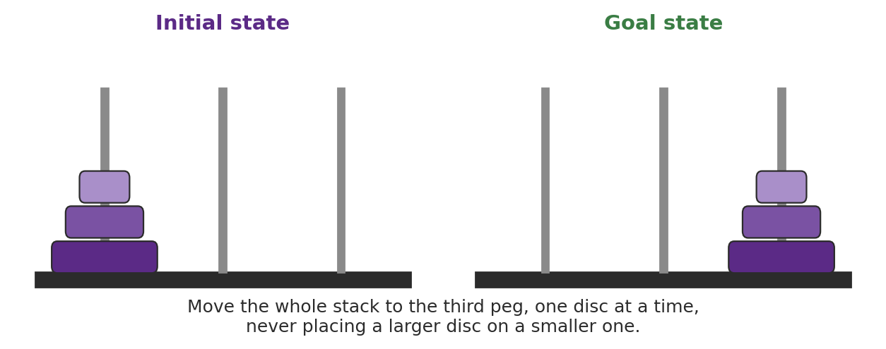
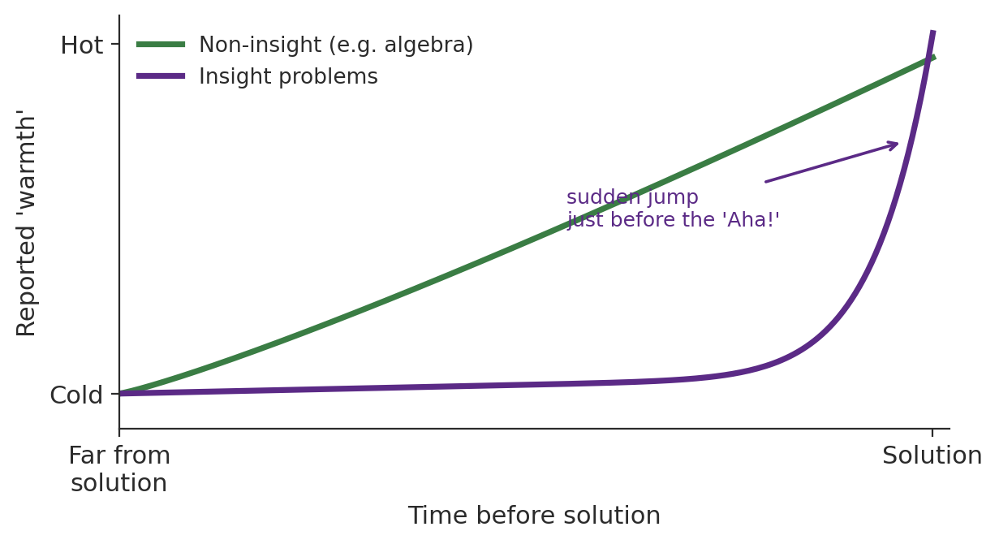
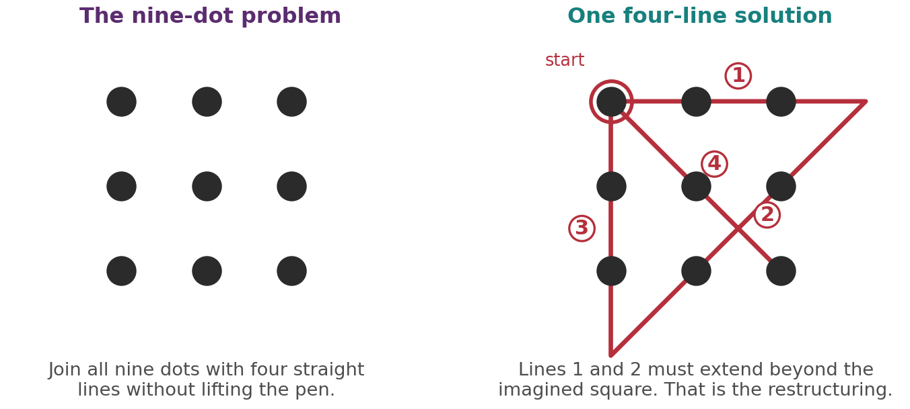
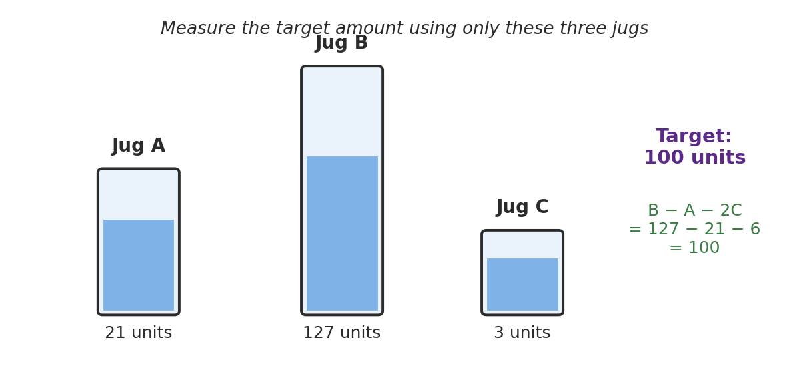
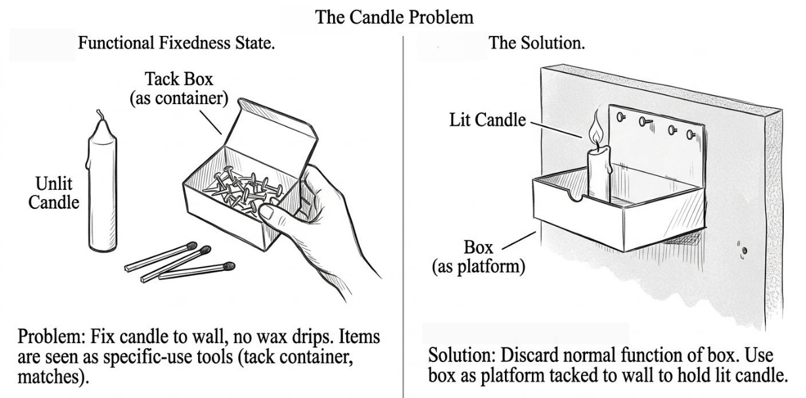
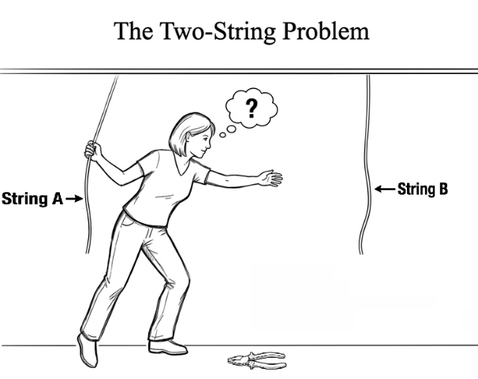
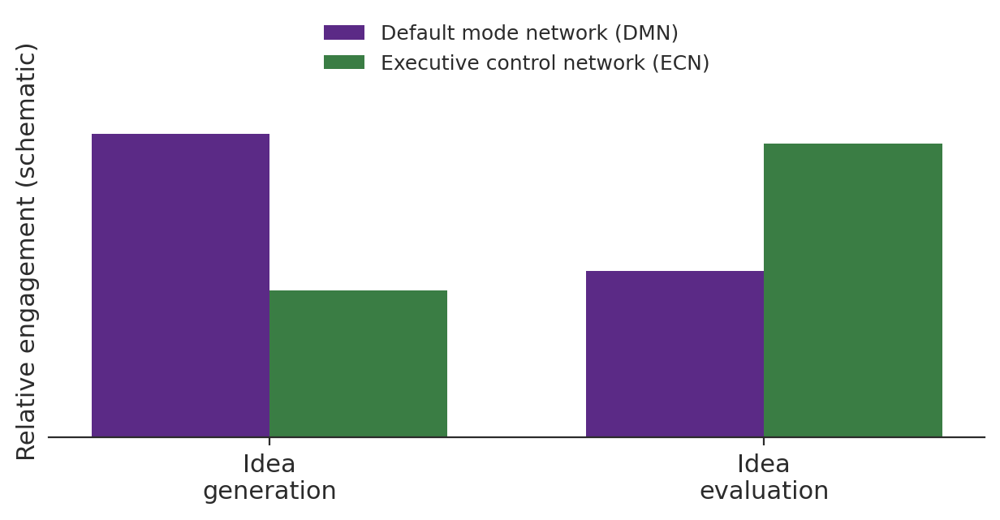

Chapter 10
Problem Solving and Creativity
Where this chapter sits
The last few chapters were about the representations the mind builds: concepts, images and language. This chapter is about what the mind does with them when the path forward is blocked. A problem, in the technical sense used here, is any situation in which there is a gap between where you are and where you want to be, and no immediately obvious way to close it. Solving it means operating on your internal representations until the gap is gone. Everything from the earlier chapters is therefore in play, because how you represent a problem largely decides whether you can solve it at all.
Problem solving, creativity and expertise are often taught apart. They are kept together here because they are the same story told at different points on one continuum. Routine problem solving applies a known method to a familiar problem. Creative problem solving is what you need when no known method fits, and it uses the same machinery pushed into less well-charted territory. Expertise is what happens to that machinery after years of practice in one domain. Treat the chapter as one argument rather than three.
Two threads run underneath. The first is the Gestalt idea that solving a problem is often a matter of restructuring how you see it, rather than grinding through it step by step. The second is the information-processing idea that problem solving is a search through a space of possible states. These look like rivals. They are better understood as describing different kinds of problem, and by the end of the chapter you should be able to say which account fits which case.
Learning objectives
10.1 What is a problem?
A problem has two defining features. There is a barrier between a present state and a goal state, and the way past that barrier is not immediately obvious. If the way were obvious you would simply do it, and there would be no problem to speak of. Doubling a recipe is not a problem in this sense; getting a printed report to your supervisor by five o'clock when the printer has just died is.
It helps to sort problems into two kinds (Pretz et al., 2003). Well-defined problems have a clearly specified starting state, a finite set of legal moves and an unambiguous goal. A chess position, an algebra equation and the Tower of Hanoi are all well-defined: you know exactly where you are, what you may do, and when you have finished. Because they can be formalised, many well-defined problems can be handed to a computer. Ill-defined problems lack one or more of these. “Paint a beautiful picture” has no agreed goal state and no fixed set of operators, yet people tackle it every day.
Most real-world problems, and almost all creative ones, are ill-defined, and the interesting point is that they usually contain well-defined sub-problems nested inside them. That is worth holding onto, because it explains why the two theoretical accounts in this chapter can both be right: the search account describes the nested sub-problems well, and the restructuring account describes the work of deciding what the sub-problems are.
10.2 Problem-solving strategies
Before any solution can be found, the problem must be identified, which is less trivial than it sounds. William James (1890) put the difficulty well: in the dim background of the mind we know what we ought to be doing, but somehow cannot start. Once the problem is in focus, one of three broad strategies is applied.
Trial and error. Keep trying different actions until one works: restart the phone, toggle the WiFi, check the cable. It is inefficient and offers no guarantee, but it is common, and sometimes it is the only option when you understand the problem poorly.
Algorithm. A step-by-step procedure guaranteed to produce the correct result for a well-defined problem, like a recipe or an assembly manual. The guarantee is real but purchased at a price: an algorithm must be followed exactly, and for large problem spaces it can be impossibly slow.
Heuristic. A general rule of thumb that often works but is not guaranteed (Tversky & Kahneman, 1974). Heuristics trade certainty for speed, and we reach for them when we face too much information, too little time, a decision that does not much matter, or too little information to reason properly. Working backwards and breaking a task into subgoals are both heuristics.
Keep the distinction between algorithm and heuristic sharp, because it recurs when we come to judgement and decision-making. An algorithm guarantees the answer and pays in effort; a heuristic is cheap and usually good enough, and its occasional failures are the source of the biases you will meet later.
10.3 The information-processing approach
The most influential formal account came from Allen Newell and Herbert Simon, who in the late 1950s built a computer program, the General Problem Solver, to simulate how people work through well-defined problems, and later set out the theory in full in Human Problem Solving (Newell & Simon, 1972). Their central idea is that solving a problem is searching a problem space. The problem space consists of an initial state, a goal state, and the intermediate states in between. Movement through it is governed by operators: rules specifying which moves are legal. Solving the problem means finding a path of legal operators from the initial state to the goal (Figure 10.1).

Searching such a space exhaustively is hopeless for anything but the smallest problems, so people use heuristics to prune it. The most important is means–ends analysis: at each step, identify the largest difference between your current state and the goal, and choose an operator that reduces it. Where a difference cannot be reduced in one move, you set up a subgoal, a nearer state that makes the reducing move possible, and solve that first. Working backwards, starting from the goal and reasoning towards the start, is a related heuristic that helps when the goal is clear but the first move is not.
The Tower of Hanoi (Figure 10.2) is the standard illustration. Three pegs; a stack of graded discs on the first; move the whole stack to the third, one disc at a time, never placing a larger disc on a smaller one. You cannot move the largest disc until everything above it is elsewhere, so you generate the subgoal of clearing the smaller discs onto the middle peg, then move the largest, then rebuild on top of it. Applied recursively, this solves the three-disc puzzle in seven moves. The missionaries-and-cannibals river-crossing problem is just as well-defined, but it teaches something different. At one point the only legal move takes people back across the river, away from the goal, and solvers tend to stall exactly there, because means–ends analysis resists any move that seems to widen the gap to the goal.

Not every well-defined problem yields to means–ends analysis, and the travelling salesperson problem shows why. Given a set of cities, find the shortest route that visits each once and returns to the start. The rules are perfectly clear, yet the number of possible routes explodes so fast with the number of cities that no exhaustive search is feasible. Humans nevertheless produce near-optimal routes quickly for modest numbers of cities, apparently by perceiving global spatial structure rather than by computing distances (MacGregor & Ormerod, 1996), which is why the task has been explored as a probe of visual-spatial problem solving.
10.4 Gestalt theory and insight
The Gestalt psychologists drew a distinction between two ways of approaching a goal (Wertheimer, 1945). Reproductive thinking reproduces a response that worked before; it is the reuse of past solutions. Productive thinking goes beyond what has been learned and produces something genuinely new, and it is productive thinking, on the Gestalt view, that involves insight. Insight is the sudden, conscious arrival of a solution after a period of getting nowhere, and the Gestaltists argued it comes about through restructuring: a reorganisation of how the elements of the problem are represented, so that a solution that was invisible becomes obvious.
Wolfgang Köhler's studies of chimpanzees on Tenerife are the classic demonstration (Köhler, 1925). His chimp Sultan, unable to reach a banana, did not flail through random attempts. He paused, then abruptly stacked boxes or slotted two sticks together to make a longer one, and carried out the solution in one smooth purposeful sequence. Köhler read this as insight rather than trial-and-error learning, but the story is less clean than the textbook version. By Köhler's own account, Sultan's two-stick solution came after an hour of failed attempts, while he was idly handling the sticks, and Birch (1945) later found that chimpanzees with no prior experience of playing with sticks rarely solved stick problems at all. Insight, on this evidence, may build on earlier trial and error rather than replace it.
Is insight a distinct process?
Or does it merely feel sudden? Metcalfe and Wiebe (1987) devised an elegant test. They gave people insight problems and non-insight algebra problems, and every fifteen seconds asked them to rate how warm, or close to a solution, they felt. For the algebra problems warmth rose steadily as people worked towards the answer, exactly as you would expect if the solution is approached incrementally. For the insight problems warmth stayed low and flat until it leapt up in the final interval, just before the solution appeared (Figure 10.3).

Notice what the design achieves. It does not ask people whether insight feels sudden, which would be a report about a feeling. It asks them repeatedly how close they are, and then examines whether that estimate tracks their actual progress. Metacognition tracks progress accurately for non-insight problems and fails to track it for insight problems, which is a behavioural difference rather than a reported one.
Whether this means insight is a special mechanism is still debated, and the deflationary reading is worth taking seriously: perhaps all problems are solved by unconscious incremental processing, and the “Aha!” is simply the moment that processing crosses into awareness. On that account the flat warmth curve reflects no access to the process rather than no progress in it. Either way the subjective suddenness is real and is a genuine clue about the architecture underneath. It is also the automatic-versus-deliberate split by another name: the incremental grind that surfaces as insight is the Elephant's work, and the Rider only meets the answer once it arrives.
10.5 Problem representation
If insight is restructuring, then how a problem is represented is not a detail; it is very often the whole game. The nine-dot problem (Figure 10.4) is the textbook case: connect a three-by-three array of dots with four straight lines without lifting the pen. Most people fail, because they read an imaginary boundary around the array and assume the lines must stay inside it. Nothing in the instructions says so. The phrase “think outside the box” is often said to come from this problem, and until you drop the unwarranted assumption the problem is not merely hard, it is impossible. Dropping it is necessary but not sufficient, though: when Weisberg and Alba (1981) told people outright that the lines had to go outside the square, only a small minority solved it, so the imagined boundary is one source of difficulty among several.

The mutilated-checkerboard problem makes the same point more sharply. Take a chessboard of 64 squares and remove two diagonally opposite corners, leaving 62. You have 31 dominoes, each covering two adjacent squares. Can you tile the 62 squares exactly? People spend a long time trying arrangements. The insight that dissolves it is a change of representation: every domino covers one light and one dark square, but the two removed corners are the same colour, so the board now has 32 of one colour and 30 of the other. No tiling can succeed, and you can see this at once without trying a single arrangement, provided you represent the board by colour rather than by position.
Notice what the useful representation does. It throws away almost all the detail people fixate on, including the entire geometry of the board, and keeps one fact. That is the general shape of a good problem representation: not a richer description but a more selective one.
How do we know representation is doing this work? One method is the think-aloud protocol, in which people say out loud whatever passes through their mind as they work. The verbal record often shows the moment a person's representation shifts, and it is at that shift that the solution tends to follow. Think-aloud data are one of the main sources of evidence that insight is a change in how a problem is construed rather than a lucky guess.
10.6 Barriers: mental set and functional fixedness
If representation can help, it can also trap. A mental set is the tendency to keep approaching a problem in a way that has worked before, even when it has stopped working. Imagine a room with four doors; the one you always use is now locked, and you keep rattling it while three others stand open.
Abraham Luchins demonstrated the effect experimentally with his water-jug problem (Luchins, 1942). You are given three jugs of known capacity and an unlimited supply of water, and asked to measure out a target amount using only those jugs. Here is the second problem in his set: jugs holding 21, 127 and 3 units, and a target of 100 (Figure 10.5).

The solution is B − A − 2C: fill jug B to 127, pour off 21 into jug A, then pour off 3 twice, leaving 100. It takes a moment to find and it feels satisfying once found. The experiment's power, though, lies not in any single problem but in the order in which they arrive, which is why the whole set is laid out in Table 10.1.
| Problem | Jug A | Jug B | Jug C | Target | Long method B − A − 2C |
Simpler route |
|---|---|---|---|---|---|---|
| 1 | 29 | 3 | — | 20 | — | two jugs only (warm-up) |
| 2 | 21 | 127 | 3 | 100 | 100 ✓ | none |
| 3 | 14 | 163 | 25 | 99 | 99 ✓ | none |
| 4 | 18 | 43 | 10 | 5 | 5 ✓ | none |
| 5 | 9 | 42 | 6 | 21 | 21 ✓ | A + 2C = 9 + 12 = 21 † |
| 6 | 20 | 59 | 4 | 31 | 31 ✓ | none |
| 7 | 23 | 49 | 3 | 20 | 20 ✓ | A − C = 23 − 3 = 20 |
| 8 | 15 | 39 | 3 | 18 | 18 ✓ | A + C = 15 + 3 = 18 |
| 9 | 28 | 76 | 3 | 25 | 42 ✗ | A − C = 28 − 3 = 25 |
| 10 | 18 | 48 | 4 | 22 | 22 ✓ | A + C = 18 + 4 = 22 |
| 11 | 14 | 36 | 8 | 6 | 6 ✓ | A − C = 14 − 8 = 6 |
Table 10.1 Luchins' (1942) water-jug problem set. Problems 2 to 6 establish the set. In the lavender rows a far simpler two-pour route also works. In problem 9, shaded cream, the long method does not work at all: it yields 42 rather than the 25 required. † Problem 5, shaded grey, admits a marginally shorter three-pour route, which participants rarely notice (see text). Capacities and targets from Luchins (1942).
Read down the table and the trap builds itself. Problems 2 to 6 are all solved by B − A − 2C, so five problems in a row reward exactly the same routine. For problems 2, 3, 4 and 6 there is genuinely no shorter route available. By problem 7 the routine is no longer a strategy you are choosing; it is simply what a water-jug problem is.
Problem 5 is worth a moment, because it is where the set first shows itself. Its target of 21 can be reached by A + 2C, that is 9 plus 6 twice, in three pours rather than four. Participants almost never find it. They have solved three problems by the long method, and a marginally shorter route is not conspicuous enough to interrupt a routine that is working. The set is already forming before any of the critical problems arrive.
From problem 7 the available shortcut is no longer marginal: two pours instead of four. Problem 7 needs only 23 minus 3, and problem 8 only 15 plus 3. Yet the long method also gives the right answer in both, so nothing signals that anything simpler exists. Most participants who have worked the training set solve problems 7, 8, 10 and 11 the long way without noticing the two-pour alternative sitting in front of them. Being right is not the same as being efficient, and nothing in the feedback distinguishes the two.
Problem 9 is where it bites. B − A − 2C gives 76 minus 28 minus 6, which is 42, not the 25 required. The only route is 28 minus 3. Participants who have been through the training set frequently fail this problem outright, or take far longer on it than people who never saw the training set, who tend to spot 28 minus 3 straight away. Some, having got the wrong answer, try the long method again rather than abandoning it.
That last detail is the heart of the finding, and it is worth being clear about what makes the demonstration convincing. Nobody is being tricked, and no problem is unfair: every one of problems 7 to 11 has a simple solution available the whole time. The naïve control participants were not cleverer, merely unencumbered. What five successes bought was a representation of the task that made the simple solution invisible, and the cost only became measurable when the environment changed. This is negative transfer, and it is the same double-edged property that returns in §10.8 as the cost of expertise.
Functional fixedness
A special case of mental set is functional fixedness: the difficulty of using an object for anything other than its usual function. Karl Duncker's candle problem (Duncker, 1945) is the classic. Given a candle, a box of tacks and matches, and asked to fix the candle to a wall so that no wax drips, people struggle because they see the box as a container for tacks rather than as a platform that could be tacked to the wall (Figure 10.6, top, illustrates the problem and its solution). The two-string problem (Maier, 1931) is a partner case (Figure 10.6, bottom, shows the set-up): two strings hang too far apart to grab both, and the solution is to tie a pair of pliers to one string and set it swinging like a pendulum. The obstacle is seeing the pliers only as a tool, not as a weight.


Two further points matter for the science. Functional fixedness is not a quirk of industrial societies: it appears in non-industrialised cultures too, for example among the Shuar of Ecuador (German & Barrett, 2005), which suggests it reflects how object knowledge is generally organised rather than exposure to specialised tools. And overcoming fixedness under pressure is a real skill. The Apollo 13 engineers kept three astronauts alive by improvising a carbon-dioxide scrubber from plastic bags, tape and hoses, which is functional fixedness defeated in real time.
10.7 Problem solving by analogy
A third route to a solution is to import one from a problem you have already solved. In analogical problem solving, a source problem with a known solution is used to crack a structurally similar target problem. Duncker's radiation problem is the standard target: a tumour deep in the body can be destroyed by a ray, but a ray strong enough to destroy it also destroys the healthy tissue it passes through. How can the tumour be treated without harming the tissue?
Most people cannot solve it. But Gick and Holyoak (1980, 1983) found that giving people a source story first changed things. In the story, a general must take a fortress approached by several roads, each mined so that any large force will set off the mines. He divides his army into small groups that converge from different directions, arriving together at full strength. The mapping, shown in Figure 10.7, is direct: fortress to tumour, army to ray, the mined roads to the healthy tissue. The solution transfers: divide the ray into several weak beams aimed from different angles so that they sum to full strength only at the tumour.
![Analogical mapping between the fortress (source) and radiation (target) problems. The fortress (left) and the tumour (right) are linked by the centre column: the fortress maps to the tumour, the army to the radiation, the mined roads to the healthy tissue, and small groups converging from different roads to weak beams converging from different angles. Because the force is divided, it is at full strength only at the target. Illustration generated with Google Gemini and edited by the author · CC BY-NC-SA 4.0 (see Attribution and licence).](media/ch10_image8.png)
Gick and Holyoak concluded that analogical transfer proceeds in three steps: noticing that a connection exists, mapping the corresponding parts onto each other, and applying the mapping to generate a parallel solution. The hard step is noticing. Only about a tenth of participants solved the radiation problem cold; around a third solved it after reading the fortress story; and roughly three-quarters solved it once they were told the story might help.
Dwell on that middle figure, because it is the finding. On its own the story helped only a minority, and most people needed to be told it was relevant, which means having the right knowledge and retrieving it at the right moment are two different problems. Most failures of analogical reasoning are retrieval failures, not comprehension failures, and they call for a different remedy.
Improving noticing, and the analogical paradox
What makes noticing more likely? Comparing two source stories rather than one. Gick and Holyoak showed that reading two analogous stories and being asked to compare them roughly doubled the solution rate, because comparison forces out the shared deep structure, the problem schema, and strips away the surface details that differ. Dedre Gentner and colleagues generalised this into analogical encoding: you learn a transferable principle far better by comparing two cases than by studying either alone (Gentner et al., 2003), and their work training negotiators showed a marked advantage for comparing two worked examples over studying the same two separately. The lesson for your own study is direct: do not read cases one at a time; line them up and ask what they share.
There is a puzzle lurking here, and it has a name: the analogical paradox (Dunbar, 2001). In the laboratory, analogical transfer is fragile, and people cling to surface similarity and miss deep matches. Yet in the real world scientists, politicians and engineers use analogies fluently and productively, and Dunbar's in vivo studies of working microbiologists found that analogies came up repeatedly in their lab meetings, most of them drawn from closely related biological systems rather than from distant domains.
Why the gap? Part of the answer is expertise: in a domain you know deeply, the deep structure is what you notice first, which is exactly the expert advantage described in §10.8. Part is that laboratory problems are stripped of the rich context that, in the real world, cues the right retrieval. The paradox is a useful warning against reading too much into any single artificial task, and it anticipates a pattern you will meet again with the Wason selection task: abstract versions are hard, thematically meaningful versions are easy.
10.8 Expertise
An expert is someone who has spent years reaching mastery in one domain, and experts solve problems in that domain faster and more accurately than novices. The interesting question is what actually differs, and the answer is not raw processing power but the organisation of knowledge.
The founding evidence comes from chess. De Groot (1965) and then Chase and Simon (1973) showed expert and novice players a board for a few seconds and asked them to reconstruct it. On real game positions experts were vastly better. On randomly arranged pieces experts were no better than novices, and sometimes worse, although later studies with larger samples found a small residual expert advantage even for random positions (Gobet & Simon, 1996).
The random-board condition is the whole argument, and it is worth naming why: it largely rules out superior visual memory as an explanation, because a better memory would help on any board. What is left is the ability to recognise meaningful configurations. Chase and Simon argued that experts store knowledge in large chunks, recurring patterns of pieces, and that a strong player may hold tens of thousands of them. On a real board those chunks let the expert encode the whole position in a few meaningful units; on a random board there are no familiar patterns and the advantage evaporates. This is why expertise is context-bound: take experts outside their domain and performance falls back towards that of novices.
It is not only the amount of knowledge that differs, but how it is structured. Chi, Feltovich and Glaser (1981) gave physics problems to advanced physics PhD students and to undergraduates who had just completed a semester of mechanics and asked them to sort the problems into groups. Novices sorted by surface structure, grouping problems that mentioned the same objects such as inclined planes or springs. Experts sorted by deep structure, grouping problems that turned on the same underlying principle such as conservation of energy, regardless of surface detail. Because experts represent a new problem by its deep structure, they can connect it to relevant knowledge and often to an analogous problem already solved, which is precisely the noticing step novices find hard. Experts also spend longer analysing a problem before acting, which looks like a slow start but avoids the dead ends novices reach by committing early.
10.9 Creativity
Creativity is easiest to define by borrowing the criteria a patent office uses (Simonton, 2012). A creative idea is original (statistically rare, ideally unique), useful (it works, or solves the problem), and surprising (non-obvious, not a straightforward deduction from what you already knew). All three are matters of degree, and an idea that scores zero on any one of them, however brilliant on the others, is not creative: a concrete parachute is original and surprising but useless, and reinventing the wheel is useful but neither original nor surprising.
Cognitively, creativity is usually linked to divergent thinking, which is open-ended and generates many possible answers with none simply right or wrong, and contrasted with convergent thinking, which narrows towards a single correct answer. Well-defined problems call for convergent thinking; ill-defined and creative problems call for divergent thinking. But divergent thinking alone is not enough, because a useful invention still has to be analysed and made to work, which is why §10.10 finds both generative and evaluative brain networks involved.
Measuring divergent thinking, and the limits of doing so
Two long-standing tasks are widely used as proxies for creative potential. The Remote Associates Test (Mednick, 1962) asks you to find a single word linking three distant cue words: given “widow, bite, monkey” the answer is “spider”; given “potato, heart, tooth” it is “sweet”. Mednick's premise was that creativity depends on connecting ideas that sit far apart conceptually, but because each item has a single correct answer, the test is usually classed as a measure of convergent rather than divergent thinking. The Unusual Uses Task (Guilford, 1967), also called the Alternative Uses Task, is the standard divergent-thinking measure: it asks you to list as many uses as possible for a common object such as a brick, scored on four dimensions: fluency (how many), originality (how rare), flexibility (how many distinct categories), and elaboration (how much detail). Using a brick as a doorstop and as a source of red powder for dye are different categories; listing ten doorstop variants is fluent but not flexible.
A caution belongs here rather than in the small print, because the rest of this chapter depends on it. Divergent-thinking tasks measure what they measure: the ability to produce many varied responses to a short prompt under time pressure. Whether that predicts creative achievement in a real domain, where the work is sustained, knowledge-heavy and evaluated by others, is a separate empirical question and the correlations are modest. So when you meet a claim that some group or condition is “more creative”, the first question to ask is what was measured. Very often it is divergent-thinking scores, which is a claim about a laboratory task rather than about creative work. We apply that test in the box at the end of the chapter.
Several cognitive and personal factors travel with creativity. Intrinsic motivation matters: Amabile (2012) argues that people are most creative when driven by interest and challenge rather than by external reward or surveillance, and that salient extrinsic motivators can actively undermine creative work. Openness to experience correlates with divergent-thinking scores and with a reduced tendency to filter out apparently irrelevant information, sometimes called reduced latent inhibition, which may be why creative people notice what others screen out. And incubation, stepping away from a problem, can improve later solutions, plausibly by letting unconscious processing continue and by loosening an unhelpful mental set. The classic staged description, from Wallas (1926), runs preparation, incubation, illumination and verification, and you should recognise illumination as the insight “Aha!” from earlier in the chapter.
10.10 Creativity and the brain
The physiology of insight and creativity is where this topic connects to the rest of the unit, and it is an active research area rather than a settled one. Three lines of work are worth knowing.
The anterior temporal lobe
Chi and Snyder (2012) used transcranial direct-current stimulation, a weak scalp current that shifts cortical excitability, over the anterior temporal lobes while people attempted the nine-dot problem. With sham stimulation nobody solved it (0 of 29); with cathodal stimulation of the left anterior temporal lobe combined with anodal stimulation of the right, 14 of 33 (about 40 per cent) solved a problem that is otherwise almost never solved cold.
That result is often glossed as switching down the left hemisphere to let people think outside the box. The precise manipulation is more subtle than that, and later attempts to reproduce right-anterior-temporal effects have been mixed, and a recent direct replication of this protocol found no benefit over sham (one solver of 24 under active stimulation against one of 26 under sham; Aycicegi-Dinn et al., 2026), so treat the specific tDCS finding as suggestive rather than definitive. What is reasonably robust across methods is that the right anterior temporal region is involved in the moment of insight, plausibly because it supports the distant semantic associations that restructuring requires.
The prepared mind
Kounios, Jung-Beeman and colleagues recorded EEG and fMRI while people solved compound-remote-associate problems and reported, for each one, whether the answer had arrived by sudden insight or by deliberate analysis (Jung-Beeman et al., 2004; Kounios et al., 2006). Two signatures stand out. About a third of a second before an insight solution is reported there is a burst of high-frequency gamma activity over the right anterior temporal cortex, absent for analytic solutions. And in the seconds before the problem even appears, brain activity predicts how it will be solved: greater activity over frontal and midline regions precedes insight solutions, whereas greater activity over occipital visual cortex precedes analytic ones.
The pre-stimulus finding is the striking one, and it is why the work is called the prepared mind. The state of the brain going into a problem biases the route to its solution, before there is any problem to solve. That is the same logic as the anticipatory preparation you met in Chapter 2, where the state of the system before a stimulus shaped what the stimulus did.
Large-scale networks
The third line links straight back to the connectome material of Chapter 1. The default mode network is active during rest, mind-wandering and self-generated thought, and is anchored on medial prefrontal and posterior cingulate cortex. The executive control network, anchored on dorsolateral prefrontal and posterior parietal cortex, is active during focused, goal-directed control. Normally the two are anti-correlated: cognitive states that engage one tend to suppress the other.
![The triple-network model. The default mode network (mPFC, PCC) and the central executive network (the executive control network of the text; DLPFC, PPC) are anti-correlated. On this model the salience network, and the anterior insula in particular, acts as a switch, engaging the executive network and suppressing the default mode network when a salient stimulus arrives. ACC, anterior cingulate cortex; DLPFC, dorsolateral prefrontal cortex; INS, anterior insula; mPFC, medial prefrontal cortex; PCC, posterior cingulate cortex; PPC, posterior parietal cortex. Reproduced unaltered from Nekovarova, Fajnerova, Horacek & Spaniel (2014), Frontiers in Behavioral Neuroscience, 8:171, Figure 2, © the authors, CC BY. The brain images in it are the authors' own resting-state fMRI data (n = 20); the schematic layout around them is adapted by those authors from Menon and Uddin (2010) and Sridharan and colleagues (2008).](media/ch10_image9.png)
Creative cognition is unusual in that the two cooperate rather than compete, which immediately raises a question the anti-correlation makes sharp: if these networks normally suppress one another, what allows them to work together? One candidate is visible in Figure 10.8. A third network, the salience network, is thought to act as a switch, with the anterior insula engaging the executive network and standing down the default mode network when something salient arrives. If that is the mechanism, then flexible creative thought would depend not on either network alone but on how well the switching between them is controlled. The triple-network model was developed to account for clinical conditions rather than creativity, but there is some direct support for it here: during divergent thinking the default mode network couples first with salience-network regions, including the insula, and later with executive regions (Beaty et al., 2015). Treat the switching account as promising rather than established.
Ellamil and colleagues (2012) had art students alternate between generating and evaluating ideas for book-cover illustrations in the scanner. Generation preferentially recruited medial temporal lobe memory regions, whereas evaluation recruited executive and default-mode regions together, and the two networks were positively coupled throughout the task. Mayseless and colleagues (2015) found that more original responses on the Alternative Uses Task were associated with greater activity in default-mode regions, including medial prefrontal and posterior cingulate cortex. The emerging picture is that creativity depends on the flexible coupling of a spontaneous associative generation system with a controlled evaluative one, rather than on either alone (Figure 10.9 shows a simplified version of this picture).

This is the unit's recurring claim in miniature: describe the process behaviourally, then show it is realised in the brain. It also gives the divergent-convergent distinction of §10.9 a physiological counterpart, which is a good deal more than a relabelling, because the two networks were characterised independently of creativity research: the default mode network, for instance, was first identified as a set of regions, including medial prefrontal cortex, posterior cingulate cortex and precuneus, whose high resting activity reliably drops during attention-demanding tasks (Raichle et al., 2001), roughly a decade before anyone applied it to creativity.
10.11 Creativity in groups
If two heads are better than one, group brainstorming ought to be the best way to generate ideas, and organisations treat it that way. The experimental literature says otherwise, and consistently: the same number of people generating ideas alone and then pooling them typically produce more ideas, and more original ones, than the same people brainstorming together (Diehl & Stroebe, 1987; Mullen et al., 1991). This is a robust finding and it is worth understanding, because the explanation is made entirely of mechanisms you have already met.
Production blocking. Only one person can speak at a time, so everyone else waits. Waiting occupies working memory, which you know from Chapter 3 is severely limited, and an idea held while someone else talks is frequently lost or displaced. This is thought to be the largest single cause.
Evaluation apprehension. In front of others, people withhold ideas that might look foolish. Since originality and apparent foolishness are hard to distinguish in advance, this selectively removes the most original contributions, which are exactly the ones a brainstorm is for.
Social loafing. Individual contributions are not identifiable in a group, so effort falls. This is not usually deliberate and people do not notice themselves doing it.
Conformity and anchoring. The first few ideas set a direction, and subsequent ideas cluster around them. This is convergence arriving early, at the point in the process where divergence was wanted.
So the useful conclusion is not that groups are bad at creativity. It is that generation and evaluation make opposite demands, and a conventional brainstorm asks a group to do both at once. The remedies follow directly from the four mechanisms. Have people generate alone first and pool afterwards, which removes production blocking entirely. Collect ideas anonymously or in writing, which reduces evaluation apprehension and removes anchoring on whoever speaks first. Make each person's contributions identifiable to the facilitator, even if they stay anonymous to the group, which reduces loafing. And separate the generation phase from the evaluation phase explicitly, which mirrors the separate generation and evaluation phases that Ellamil and colleagues imaged in the scanner.
Chapter summary
A problem is a gap between a present state and a goal state with no obvious way across. Well-defined problems have a clear start, operators and goal; ill-defined problems, including most real and creative ones, do not, though they usually contain well-defined sub-problems. The three strategies are trial and error, algorithms (guaranteed but costly) and heuristics (cheap and usually good enough).
Newell and Simon's information-processing account treats solving as search through a problem space using operators, guided by means–ends analysis and subgoals. It fits well-defined problems well and insight problems poorly, because there the hard part is representing the space rather than searching it.
The Gestalt account treats solving as restructuring. Metcalfe and Wiebe (1987) showed that warmth ratings rise gradually for non-insight problems but jump only at the end for insight problems, which is a behavioural rather than a reported difference. A deflationary reading is that the “Aha!” is simply unconscious incremental processing crossing into awareness.
Representation is often decisive. The nine-dot and mutilated-checkerboard problems are solved by changing how the problem is construed, and the useful representation is typically more selective rather than richer. Think-aloud protocols reveal the shift.
Mental set (Luchins, 1942) and functional fixedness (Duncker's candle; the two-string problem) are barriers created by prior learning. In Luchins' set, five problems solved by the same long formula make a two-pour solution invisible on later problems, and participants fail the problem where the long formula stops working. Functional fixedness appears across cultures (German & Barrett, 2005), suggesting it reflects how object knowledge is organised generally.
Analogical transfer proceeds by noticing, mapping and applying (Gick & Holyoak, 1980, 1983). Noticing is the bottleneck: the fortress story helped only a minority until participants were told it was relevant, so most failures are retrieval failures rather than comprehension failures. Comparing two cases (analogical encoding; Gentner et al., 2003) improves transfer, and the analogical paradox (Dunbar, 2001) notes that analogy is harder in the laboratory than in the real world.
Experts differ from novices by chunking domain patterns (Chase & Simon, 1973) and by representing problems through deep rather than surface structure (Chi et al., 1981). The random-board control rules out superior general memory, and the advantage is context-bound.
Creativity is original, useful and surprising. Divergent thinking generates possibilities and convergent thinking narrows to an answer. The Unusual Uses Task measures divergent thinking and the Remote Associates Test measures convergent, associative thinking; divergent-thinking scores predict real-world creative achievement only modestly, so claims that a group is “more creative” should be checked against what was actually measured.
Intrinsic motivation, openness to experience and incubation support creativity; salient extrinsic rewards can undermine it.
Neurally, insight involves a right-anterior-temporal gamma burst and a prepared pre-stimulus brain state (Jung-Beeman et al., 2004; Kounios et al., 2006), and creative cognition depends on cooperation between the default mode and executive control networks (Ellamil et al., 2012; Mayseless et al., 2015), which normally oppose one another. The salience network, and the anterior insula in particular, is a candidate switch between them, though the triple-network model was developed for clinical conditions rather than creativity. The tDCS result (Chi & Snyder, 2012) is suggestive rather than settled.
Group brainstorming typically underperforms the same people working alone, because of production blocking, evaluation apprehension, social loafing and early anchoring. The remedy is to separate generation from evaluation, which is the behavioural counterpart of the network finding.
Self-check questions
Distinguish well-defined from ill-defined problems, and explain why the information-processing approach suits the former better. Why does the nesting of well-defined sub-problems inside ill-defined ones matter for the debate between the two accounts?
Explain the difference between an algorithm and a heuristic, and what each buys and costs.
What is means–ends analysis, and how do subgoals help solve the Tower of Hanoi? Why does exhaustive search fail for the travelling salesperson problem?
Describe Metcalfe and Wiebe's (1987) warmth-rating result. Why is asking people repeatedly how close they are better evidence than asking them whether insight felt sudden?
State the deflationary interpretation of insight, and say what the flat warmth curve would mean on that reading.
Köhler read Sultan's behaviour as insight. How do the circumstances of Sultan's two-stick solution, and Birch's (1945) finding on prior experience, complicate that interpretation?
Explain, using the mutilated-checkerboard problem, why a change of representation can turn an intractable problem into an obvious one. What information does the useful representation discard, and why is discarding it helpful?
What is functional fixedness, and how do the candle and two-string problems demonstrate it?
Using Table 10.1, explain how problems 2 to 6 create the mental set, why problems 7 and 8 fail to break it even though a two-pour route exists, and why problem 9 exposes it. What does the untrained control group contribute to the conclusion?
Problem 5 has a shorter route that participants almost never find, while problem 7 has a much shorter one they also miss. What does the difference between those two cases suggest about what has to be true of an alternative before a set will be broken?
Set out the three steps of analogical transfer. Given that a third solved the radiation problem after reading the fortress story but three-quarters solved it when told the story was relevant, what kind of failure is the main obstacle?
How does comparing two source problems improve transfer, and what is a problem schema? State the analogical paradox and give two explanations for it.
How do experts differ from novices in the chess-reconstruction studies, and what exactly does the random-board control rule out?
What is the difference between sorting problems by surface and by deep structure, and how does it connect expertise to analogical noticing?
Where would you expect an expert's mental set to be most costly? Describe a situation in which a novice might outperform an expert.
Define divergent and convergent thinking, and name the four dimensions on which Unusual Uses responses are scored.
Why should you be cautious about treating divergent-thinking scores as a measure of creativity? What is the gap between the task and the construct?
Summarise the evidence that the default mode and executive control networks both contribute to creative cognition, and explain why their cooperation is surprising.
Why is the pre-stimulus finding in the prepared-mind studies more surprising than the gamma burst at the moment of insight?
The default mode and executive control networks are normally anti-correlated, yet both contribute to creative cognition. Explain why that raises a question about mechanism, and what role the salience network is proposed to play. What direct evidence supports the proposal, and why is it still not settled?
Give the four standard explanations for why group brainstorming underperforms individuals working alone, and say which remedy addresses which mechanism.
Barack and colleagues (2024) found that higher attention-deficit traits predicted more exploration and higher reward rates in a foraging task. Explain precisely why this does not establish that the traits were evolutionarily selected for, and what evidence would be needed.
A claim that a group is “more creative” rests on divergent-thinking scores. Set out two distinct reasons for caution, one about the sample and one about the measure.
Model answers to these questions are in the answers companion, Chapter 10. Try each question yourself before you look.
Attribution and licence
This chapter is licensed under a Creative Commons Attribution-NonCommercial-ShareAlike 4.0 International (CC BY-NC-SA 4.0) licence. It adapts and remixes material from the sources below; changes were made, including restructuring, rewriting for voice and level, integration of the neuroscience of creativity, and the addition of original framing, prompts and figures.
Graham and Griffin (2025), Cognitive Psychology, Chapter 10: Creative Problem-Solving and Expertise (Central New Mexico Community College). CC BY-NC-SA 4.0. Base source for §§10.1 to 10.9. Graham and Griffin's chapter itself adapts Andrade and Walker, and Simonton's Noba module Creativity (CC BY-NC-SA).
Andrade and Walker (2019), Cognitive Psychology (LibreTexts / College of the Canyons), Chapter 6 (Problem Solving) and Chapter 7 (Creativity). CC BY 4.0. Supplement for strategies, the Wallas stages, incubation and creativity measures.
Nekovarova, Fajnerova, Horacek and Spaniel (2014), Frontiers in Behavioral Neuroscience. CC BY 4.0. Figure 10.8 of this chapter reproduces Figure 2 of that article, unaltered; the original is © the authors. The network images in it derive from the authors' own resting-state fMRI sample, and the schematic is adapted by them from Menon and Uddin (2010) and Sridharan and colleagues (2008).
AI-generated images: Figure 10.6 (the candle and two-string problems) and Figure 10.7 (the fortress and radiation problems) combine illustrations generated with Google Gemini (Nano Banana 2) with the author's editing, cropping and labelling. The raw generated output may not attract copyright; to the extent that the author's selection, arrangement and modifications do, they are released under this chapter's CC BY-NC-SA 4.0 licence.
All other studies cited in this chapter, including the neuroscience of creativity in §10.10, the group-brainstorming literature in §10.11 and the ADHD material in the final box, are drawn from the primary literature and described in the author's own wording, with nothing reproduced.
Figures 10.1 to 10.5 and 10.9 are original diagrams created for this book. Figure 10.8 is reproduced under CC BY as detailed above.
Full bibliographic details for every work cited in this chapter, including the sources named above, are given in the References below.
References
Amabile, T. M. (2012). Componential theory of creativity (Working Paper No. 12-096). Harvard Business School.
Andrade, M., & Walker, N. (2019). Cognitive psychology. College of the Canyons; LibreTexts. https://socialsci.libretexts.org/Bookshelves/Psychology/Cognitive_Psychology/Cognitive_Psychology_(Andrade_and_Walker)
Aycicegi-Dinn, A., Göral, F., Karamürsel, S., & Dinn, W. M. (2026). Transcranial direct current stimulation (tDCS) and the 9-dot problem. Neuropsychologia, 226, Article 109436. https://doi.org/10.1016/j.neuropsychologia.2026.109436
Barack, D. L., Ludwig, V. U., Parodi, F., Ahmed, N., Brannon, E. M., Ramakrishnan, A., & Platt, M. L. (2024). Attention deficits linked with proclivity to explore while foraging. Proceedings of the Royal Society B: Biological Sciences, 291(2017), Article 20222584. https://doi.org/10.1098/rspb.2022.2584
Beaty, R. E., Benedek, M., Kaufman, S. B., & Silvia, P. J. (2015). Default and executive network coupling supports creative idea production. Scientific Reports, 5, Article 10964. https://doi.org/10.1038/srep10964
Birch, H. G. (1945). The relation of previous experience to insightful problem-solving. Journal of Comparative Psychology, 38(6), 367–383. https://doi.org/10.1037/h0056104
Boot, N., Nevicka, B., & Baas, M. (2020). Creativity in ADHD: Goal-directed motivation and domain specificity. Journal of Attention Disorders, 24(13), 1857–1866. https://doi.org/10.1177/1087054717727352
Chase, W. G., & Simon, H. A. (1973). Perception in chess. Cognitive Psychology, 4(1), 55–81. https://doi.org/10.1016/0010-0285(73)90004-2
Chi, M. T. H., Feltovich, P. J., & Glaser, R. (1981). Categorization and representation of physics problems by experts and novices. Cognitive Science, 5(2), 121–152. https://doi.org/10.1207/s15516709cog0502_2
Chi, R. P., & Snyder, A. W. (2012). Brain stimulation enables the solution of an inherently difficult problem. Neuroscience Letters, 515(2), 121–124. https://doi.org/10.1016/j.neulet.2012.03.012
De Groot, A. D. (1965). Thought and choice in chess. Mouton.
Diehl, M., & Stroebe, W. (1987). Productivity loss in brainstorming groups: Toward the solution of a riddle. Journal of Personality and Social Psychology, 53(3), 497–509. https://doi.org/10.1037/0022-3514.53.3.497
Dunbar, K. (2001). The analogical paradox: Why analogy is so easy in naturalistic settings, yet so difficult in the psychological laboratory. In D. Gentner, K. J. Holyoak, & B. N. Kokinov (Eds.), The analogical mind: Perspectives from cognitive science (pp. 313–334). MIT Press.
Duncker, K. (1945). On problem-solving (L. S. Lees, Trans.). Psychological Monographs, 58(5), i–113. https://doi.org/10.1037/h0093599
Ellamil, M., Dobson, C., Beeman, M., & Christoff, K. (2012). Evaluative and generative modes of thought during the creative process. NeuroImage, 59(2), 1783–1794. https://doi.org/10.1016/j.neuroimage.2011.08.008
Gentner, D., Loewenstein, J., & Thompson, L. (2003). Learning and transfer: A general role for analogical encoding. Journal of Educational Psychology, 95(2), 393–408. https://doi.org/10.1037/0022-0663.95.2.393
German, T. P., & Barrett, H. C. (2005). Functional fixedness in a technologically sparse culture. Psychological Science, 16(1), 1–5. https://doi.org/10.1111/j.0956-7976.2005.00771.x
Gick, M. L., & Holyoak, K. J. (1980). Analogical problem solving. Cognitive Psychology, 12(3), 306–355. https://doi.org/10.1016/0010-0285(80)90013-4
Gick, M. L., & Holyoak, K. J. (1983). Schema induction and analogical transfer. Cognitive Psychology, 15(1), 1–38. https://doi.org/10.1016/0010-0285(83)90002-6
Gobet, F., & Simon, H. A. (1996). Recall of rapidly presented random chess positions is a function of skill. Psychonomic Bulletin & Review, 3(2), 159–163. https://doi.org/10.3758/BF03212414
Graham, R., & Griffin, S. (2025). Cognitive psychology. Central New Mexico Community College. https://nmoer.pressbooks.pub/cognitivepsychology/
Guilford, J. P. (1967). The nature of human intelligence. McGraw-Hill.
Hoogman, M., Stolte, M., Baas, M., & Kroesbergen, E. (2020). Creativity and ADHD: A review of behavioral studies, the effect of psychostimulants and neural underpinnings. Neuroscience & Biobehavioral Reviews, 119, 66–85. https://doi.org/10.1016/j.neubiorev.2020.09.029
James, W. (1890). The principles of psychology. Henry Holt.
Jung-Beeman, M., Bowden, E. M., Haberman, J., Frymiare, J. L., Arambel-Liu, S., Greenblatt, R., Reber, P. J., & Kounios, J. (2004). Neural activity when people solve verbal problems with insight. PLoS Biology, 2(4), Article e97. https://doi.org/10.1371/journal.pbio.0020097
Köhler, W. (1925). The mentality of apes (E. Winter, Trans.). Harcourt, Brace.
Kounios, J., Frymiare, J. L., Bowden, E. M., Fleck, J. I., Subramaniam, K., Parrish, T. B., & Jung-Beeman, M. (2006). The prepared mind: Neural activity prior to problem presentation predicts subsequent solution by sudden insight. Psychological Science, 17(10), 882–890. https://doi.org/10.1111/j.1467-9280.2006.01798.x
Luchins, A. S. (1942). Mechanization in problem solving: The effect of Einstellung. Psychological Monographs, 54(6), i–95. https://doi.org/10.1037/h0093502
MacGregor, J. N., & Ormerod, T. (1996). Human performance on the traveling salesman problem. Perception & Psychophysics, 58(4), 527–539. https://doi.org/10.3758/BF03213088
Maier, N. R. F. (1931). Reasoning in humans. II. The solution of a problem and its appearance in consciousness. Journal of Comparative Psychology, 12(2), 181–194. https://doi.org/10.1037/h0071361
Mayseless, N., Eran, A., & Shamay-Tsoory, S. G. (2015). Generating original ideas: The neural underpinning of originality. NeuroImage, 116, 232–239. https://doi.org/10.1016/j.neuroimage.2015.05.030
Mednick, S. A. (1962). The associative basis of the creative process. Psychological Review, 69(3), 220–232. https://doi.org/10.1037/h0048850
Menon, V., & Uddin, L. Q. (2010). Saliency, switching, attention and control: A network model of insula function. Brain Structure and Function, 214(5–6), 655–667. https://doi.org/10.1007/s00429-010-0262-0
Metcalfe, J., & Wiebe, D. (1987). Intuition in insight and noninsight problem solving. Memory & Cognition, 15(3), 238–246. https://doi.org/10.3758/BF03197722
Mullen, B., Johnson, C., & Salas, E. (1991). Productivity loss in brainstorming groups: A meta-analytic integration. Basic and Applied Social Psychology, 12(1), 3–23. https://doi.org/10.1207/s15324834basp1201_1
Nekovarova, T., Fajnerova, I., Horacek, J., & Spaniel, F. (2014). Bridging disparate symptoms of schizophrenia: A triple network dysfunction theory. Frontiers in Behavioral Neuroscience, 8, Article 171. https://doi.org/10.3389/fnbeh.2014.00171
Newell, A., & Simon, H. A. (1972). Human problem solving. Prentice-Hall.
Pretz, J. E., Naples, A. J., & Sternberg, R. J. (2003). Recognizing, defining, and representing problems. In J. E. Davidson & R. J. Sternberg (Eds.), The psychology of problem solving (pp. 3–30). Cambridge University Press.
Raichle, M. E., MacLeod, A. M., Snyder, A. Z., Powers, W. J., Gusnard, D. A., & Shulman, G. L. (2001). A default mode of brain function. Proceedings of the National Academy of Sciences of the United States of America, 98(2), 676–682. https://doi.org/10.1073/pnas.98.2.676
Simonton, D. K. (2012). Creativity. In R. Biswas-Diener & E. Diener (Eds.), Noba textbook series: Psychology. DEF Publishers.
Sridharan, D., Levitin, D. J., & Menon, V. (2008). A critical role for the right fronto-insular cortex in switching between central-executive and default-mode networks. Proceedings of the National Academy of Sciences of the United States of America, 105(34), 12569–12574. https://doi.org/10.1073/pnas.0800005105
Swanepoel, A., Music, G., Launer, J., & Reiss, M. J. (2017). How evolutionary thinking can help us to understand ADHD. BJPsych Advances, 23(6), 410–418. https://doi.org/10.1192/apt.bp.116.016659
Tversky, A., & Kahneman, D. (1974). Judgment under uncertainty: Heuristics and biases. Science, 185(4157), 1124–1131. https://doi.org/10.1126/science.185.4157.1124
Wallas, G. (1926). The art of thought. Jonathan Cape.
Weisberg, R. W., & Alba, J. W. (1981). An examination of the alleged role of “fixation” in the solution of several “insight” problems. Journal of Experimental Psychology: General, 110(2), 169–192. https://doi.org/10.1037/0096-3445.110.2.169
Wertheimer, M. (1945). Productive thinking. Harper.